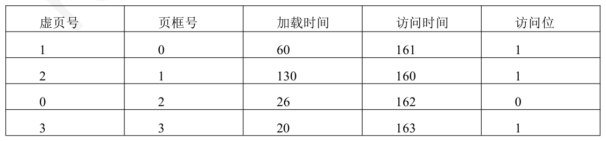
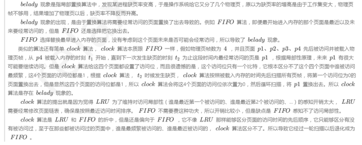

第 61 题
系统采用请求分页式存储管理方式，页框的分配和置换采用固定分配局部置换。操作系统给进程A 分配的页框数为4，初始为空。接下来一段时间中进程陆续访问了如下页面：1、8、1、7、8、2、 7、2、1、8、3、8、2、1、3、1、7、1、3、7。若采用LRU 算法置换页面，则发生缺页中断的次数是 （）。
A． 3 B． 5 C． 6 D． 8 答案与解析 答案：C
操作系统为进程A 分配了4 个页框，当第一次访问页面时会发生缺页中断，所以当第一次访问页面1、8、7、2都会发生缺页中断。采用的是LRU最近最久未使用置换算法访问1(缺页)、8(缺页)、7(缺页)、8、2(缺页)、7、2、1、8、3(缺页)、8、2、1、3、1、7(缺页)、1、3、7。发生缺页中断的次数为6 次，选C。
教材第 155 页 第 62 题
系统按字节编址，采用请求分页存储系统，页框的分配和置换采用固定分配局部置换方式。某一时刻，进程A 的页框全部空闲，在接下来的一段时间中依次访问了如下页面：1，3，2，1，1，3，5， 1，3，2，1，5。若使用LRU 算法选择置换页，请问进程A 分配页框数为3 和4 时的缺页率各是多少 （）。
A． 20%，33% B． 50%，33% C． 25%，66% D． 50%，80% 答案与解析 答案：B
当为进程A 分配页框数为3 时，访问页面顺序1(缺页)，3(缺页)，2(缺页)，1， 1，3，5(缺页)，1，3，2(缺页)，1，5(缺页)。缺页率=6/12=50%。当为进程A 分配页框数为4 时，访问页面顺序1(缺页)，3(缺页)，2(缺页)，1，1，3，5(缺页)， 1，3，2，1，5。缺页率=4/12=33%，选B。
教材第 155 页 第 63 题
给一个进程分配4 个页框，其页表如下。在时间164 产生虚页号4 缺页。分别按照FIFO、 LRU、CLOCK 策略，被置换出的页框号是（ ）。

A． 3、1、1 B． 3、2、0 C． 3、2、3 D． 3、1、2 答案与解析 答案：D
根据FIFO策略，最先置换出去的页面是最早进入的，最早进入的页框号是3，所以按照FIFO策略，会将页框号为3 的页面置换出去。根据LRU策略，最先置换出去的是最近最久未使用的页面，由引用时间可知，最近最久未使用的页框为1 号页框，所以会将1 号页框置换出去。根据CLOCK 策略，会将引用位为0 的页面置换出去，所以会将2 号页框置换出去。选项D 正确。
教材第 155 页 第 64 题
已按勘误修正
以下对置换算法和抖动的描述中正确的有（ ）
A． I、Ⅲ B． Ⅰ、IV C． I、II、III D． Ⅱ、IV 答案与解析 答案：C
会发生Belady现象的算法：FIFO、CLOCK以及改进的CLOCK；不会发生Belady现象的算法：LRU、OPT，故Ⅰ、Ⅱ正确。如果进程的工作集都被调入了虚拟内存中，还是会发生缺页中断，且不会保持在较低水平；而如果进程的工作集都被调入物理内存中，进程的缺页率可以保持一个较低水平，故Ⅲ对、Ⅳ错。答案是C，I、II、III正确。

勘误：C 选项已按勘误改为 I、II、III。
勘误：勘误确认：答案选 C。
勘误：解析已按勘误替换
教材第 155 页 第 65 题
进程A 在t 时刻前访问了如下页面：3、6、3、4、9、5、9，在接下来的一段时间里还将访问页面：2、4、6、4、8、9。设工作集窗口大小为4，则进程A 在1 时刻时的工作集是（ ）。
A． 4、5、9 B． 3、4、5、9 C． 2、4、6、8 D． 2、4、6 答案与解析 答案：A
在任意时刻t，都存在一个集合，它包含所有最近k 次(该题窗口大小为4)内存访问所访问过的页面。这个集合w(k，t)就是工作集。题中最近4 次访问的页面分别为4、9、5、9，去除重复的页面，形成的工作集为{4、5、9}。
教材第 156 页 第 66 题
在页式虚拟管理系统中，假定驻留集为m 个页帧（初始所有页帧均为空），在长为p 的引用串中具有n 个不同页号(n>m)，对于FIFO、LRU 两种页面替换算法，其缺页中断的次数的范围分别为 （）。
A． [m，p]和[n，p] B． [m，n]和[n，p] C． [n，p]和[m，n] D． [n，p] 和[n，p] 答案与解析 答案：D
缺页中断的原因是当前访问的页不在主存，需将该页调入主存。此时不管主存是否已满(已满则先调出一页)，都要发生一次缺页中断。即无论怎么安排，n 个不同的页号在首次进入主存时必须要发生一次缺页中断，总共发生n 次，这就是缺页中断的下限。虽然不同页号数为n，小于或等于总长度p(访问串可能会有一些页重复出现)，但驻留集m<n，所以可能会有某些页进入主存后又被调出主存，当再次访问时又发生一次缺页中断的现象，即有些页可能会出现多次缺页中断。极端情况是每访问一个页号时，该页都不在主存，这样共发生了p 次故障。所以无论对于FIFO 或者LRU 替换算法，其缺页中断的上限均为p，下限均为n。
教材第 156 页 第 67 题
内存映射文件（Memory-Mapped File）是一种允许进程将文件内容直接映射到其虚拟地址空间的技术。下列关于内存映射文件的叙述中，错误的是（）
A． 进程访问内存映射文件区域就像访问普通内存一样，无需显式的read（）或write（ ）系统调用。 B． 多个不同进程可以将同一个文件映射到它们各自的虚拟地址空间中，从而实现对该文件内容的高效共享。 C． 当一个进程修改其内存映射文件区域时，所做的修改会立即写回磁盘上的原始文件。 D． 内存映射文件区域的读写操作可能会引发缺页中断，操作系统会负责将文件内容从磁盘按需调入物理内存。 答案与解析 答案：C
A 正确，一旦文件被映射到进程的虚拟地址空间，进程就可以像访问普通内存数组一样，通过指针和内存访问指令（如MOV）来直接读写文件内容，而不需要调用传统的read()或write()系统调用。 B 正确，内存映射文件是实现进程间共享数据（特别是大文件）的一种高效方式。多个进程可以将同一个文件映射到它们各自的地址空间。如果映射是共享的，那么一个进程对映射区域的修改对其他共享该映射的进程是可见的（取决于映射类型和同步机制）。 C 错误，当进程退出或关闭文件映射时，所有的被改动页面才会被写回磁盘文件，并非修改后立即写回。 D 正确，内存映射文件利用了操作系统的请求分页机制。当进程首次访问映射区域中的某个页面，而该页面尚未加载到物理内存时，会发生缺页中断。操作系统会响应该中断，从磁盘文件中读取相应的页面内容到物理内存，并更新页表，然后进程才能继续执行。这种按需调入的方式使得可以映射远大于物理内存的文件。
教材第 156 页 第 68 题
以下关于内存映射文件的说法中正确有（ ）。
A． 仅Ⅰ、Ⅱ B． Ⅰ、Ⅱ、Ⅲ C． Ⅰ、Ⅲ、Ⅳ D． Ⅰ、Ⅱ、Ⅲ、Ⅳ 答案与解析 答案：B
Ⅰ、Ⅱ、Ⅲ正确。 Ⅰ正确，传统的I/O 操作（如read()）会将文件数据从磁盘读入内核的页高速缓存，然后再从页高速缓存复制到用户进程的缓冲区。内存映射文件通过将文件内容直接映射到进程的虚拟地址空间，可以避免这次从内核空间到用户空间的额外数据复制，从而提高I/O 效率。 Ⅱ正确，这是内存映射文件的核心概念。通过系统调用（如mmap()），文件在磁盘上的内容被映射到进程虚拟地址空间的一个连续区域。之后，进程就可以像访问内存一样访问文件内容。 Ⅲ正确，当多个进程将同一个文件以共享模式映射到它们各自的虚拟地址空间时，它们实际上共享了物理内存中该文件的相同副本（通过页高速缓存）。一个进程对映射区域的修改可以被其他共享该映射的进程看到（取决于映射类型和同步）。这种直接的内存共享避免了传统IPC 机制（如管道、消息队列）中数据需要通过内核进行多次复制的开销，因此可以提供一种高带宽的进程间通信方式，特别适合大量数据的共享。 Ⅳ错误，内存映射文件利用了操作系统的请求调页（Demand Paging）机制。当文件被映射时，并不会立即将其全部内容调入物理内存。只有当进程实际访问到映射区域中的某个特定页面，而该页面尚未在物理内存中时，才会触发缺页中断，操作系统再负责将对应的文件部分从磁盘调入物理内存。这种按需调页的方式使得可以映射远大于可用物理内存的文件。
教材第 156 页 第 69 题
下列选项中，能够影响系统缺页率的是（ ）。
A． Ⅰ、Ⅱ、Ⅲ、Ⅴ B． Ⅰ、Ⅱ、Ⅳ、Ⅴ C． Ⅱ、Ⅲ、Ⅳ、Ⅴ D． Ⅰ、Ⅱ、Ⅲ、Ⅳ 答案与解析 答案：A
Ⅰ页置换算法会影响缺页率，例如，LRU算法的缺页率通常要比FIFO算法的缺页率低。 Ⅱ工作集的大小决定了分配给进程的物理块数，分配给进程的物理块数越多，缺页率就越低。 Ⅲ进程的数量越多，对内存资源的竞争越激烈，每个进程被分配的物理块数越少，缺页率也就越高。 Ⅳ页缓冲队列是将被淘汰的页面缓存下来，暂时不写回磁盘，缺页是指访问的页未分配页框，在页缓冲或在磁盘，都叫缺页。所以队列长度会影响页面置换的速度，但不会影响缺页率。 Ⅴ编写程序的局部化程度越高，执行时的缺页率就越低。若存储采用的是按行存储，则访问时就要尽量采用相同的访问方式，避免按列访问造成缺页率过高的现象。
教材第 156 页 第 70 题
为判断一个请求分页存储管理系统的运行性能，对系统中各设备的利用率进行测试，结果如下CPU 利用率为15%，磁盘交换区利用率为99.1%，其他I/O 设备利用率为6%。以下措施中可以改进CPU 利用率的是（ ）。
A． Ⅰ、Ⅱ B． Ⅰ、Ⅲ C． Ⅱ、Ⅲ、Ⅴ、Ⅵ D． Ⅰ、Ⅱ、Ⅲ、Ⅳ 答案与解析 答案：A
由题目可以得出，大部分时间消耗在磁盘交换区，也就是说，物理内存太小，导致数据需要频繁的换进换出，因此使用容量更大的内存可以改进CPU 利用率。此外CPU 和I/O 利用率都很低，说明CPU 一次读取了太多的程序放入内存中，因此减少系统多道程序度数，使每个进程可以分配到更多页框，也可以改进CPU 利用率。选Ⅰ，Ⅱ。 【答案速对】 DBBDCBCCABCADABCAACADCBDBBBCBDBDBABDCBBBDCADADCCCCDCAABDACBDBBADBCCDCCCBD
教材第 157 页